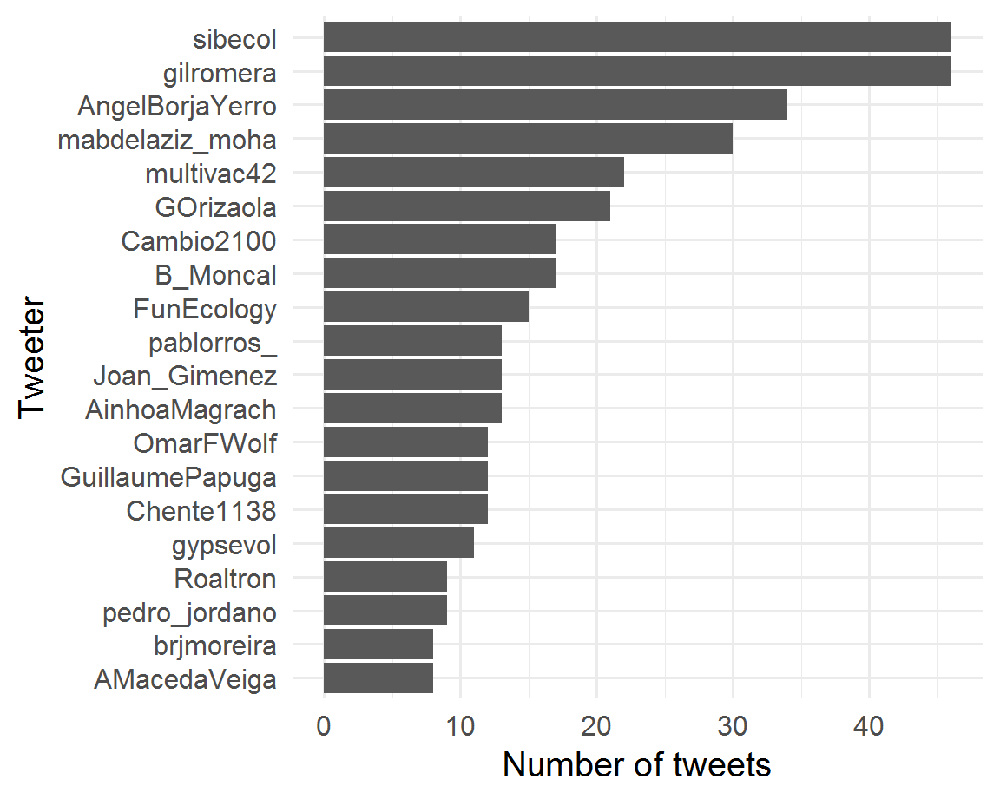
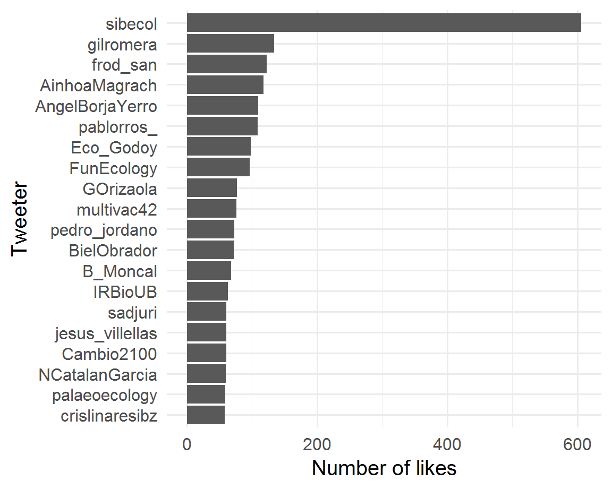
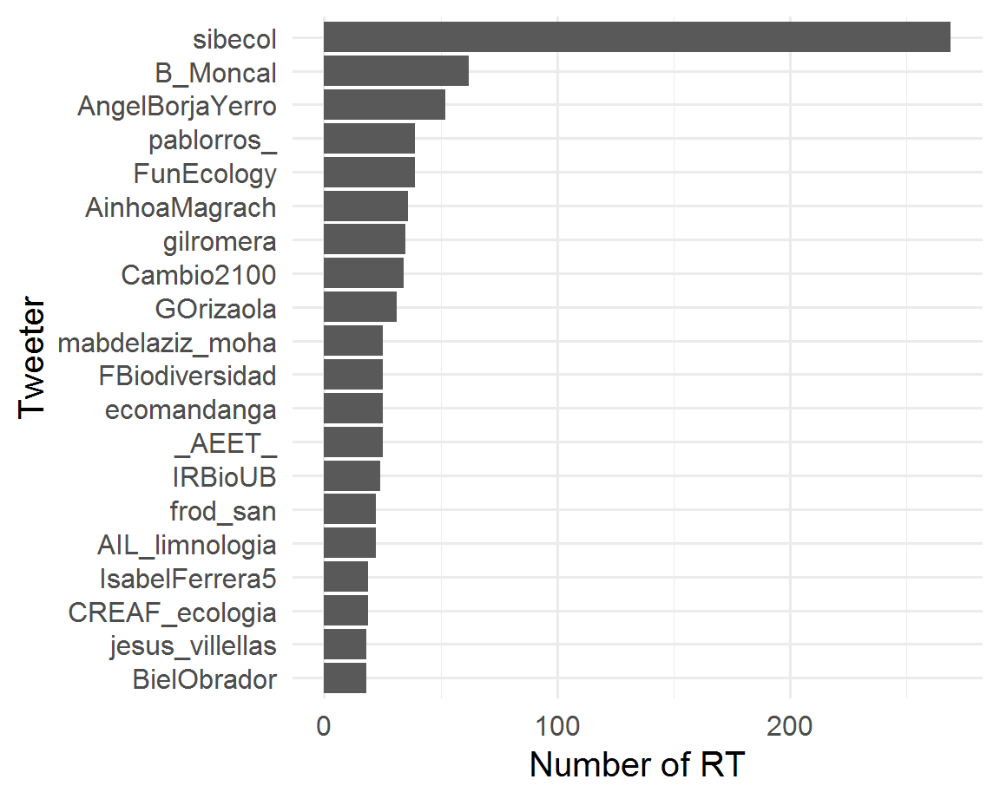
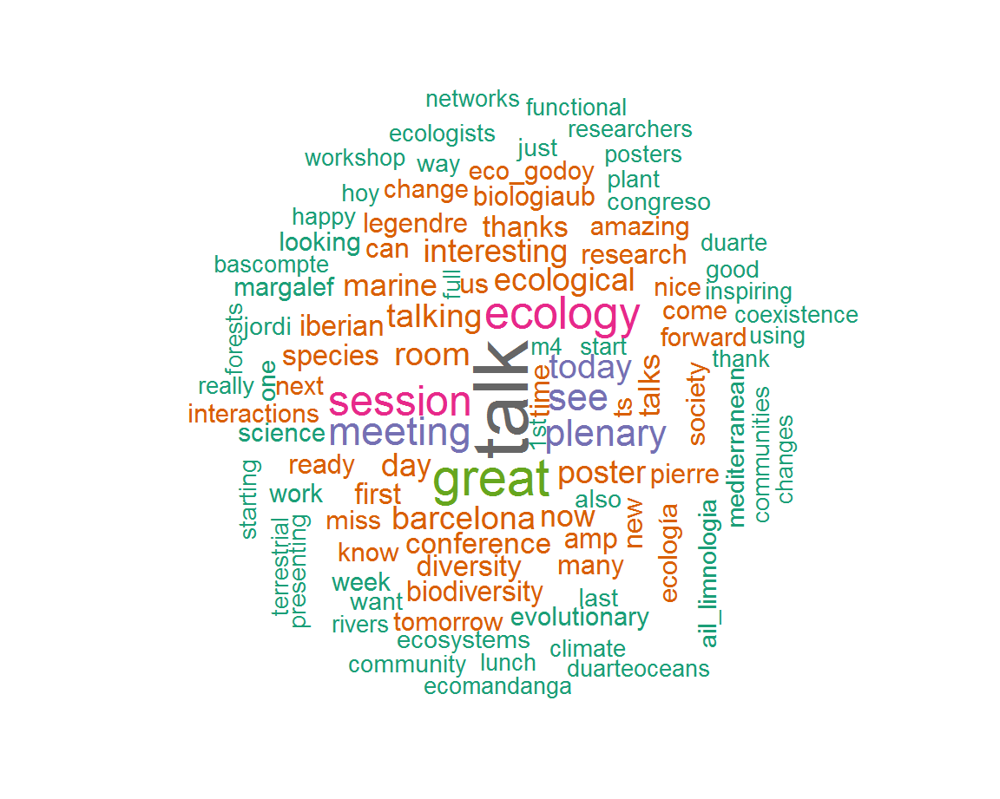
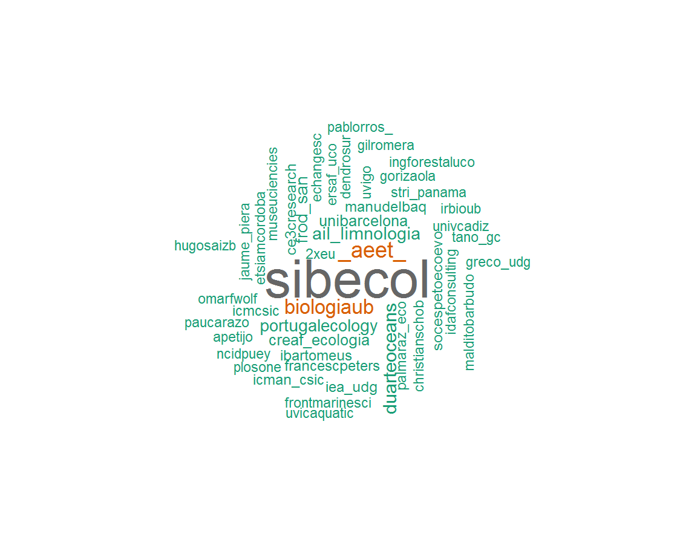

Today, more than 600 ecologists are joining to share their scientific knowledge in the 1st Iberian Ecological Society Meeting
SIBECOL (@sibecol)
Today, more than 600 ecologists are joining to share their scientific knowledge in the 1st Iberian Ecological Society Meeting
SIBECOL (@sibecol)
What an incredible way to conclude day2 of @sibecol meeting! Absolute master class by Pierre Legendre on beta diversity partitioning. It’s inspiring to see him explaining every concept in a crystal clear way, allowing anyone to understand his point. #SIBECOL2019 https://t.co/llTm9l047l
Guillaume Papuga (@GuillaumePapuga)
.
Today, more than 600 ecologists are joining to share their scientific knowledge in the 1st Iberian Ecological Society Meeting
SIBECOL (@sibecol)
Slides here: https://t.co/S0PK3QswiG #SIBECOL2019 #rstats #rmarkdown #ReproducibleScience https://t.co/o3NzNSh5gm
F Rodriguez-Sanchez (@frod_san)
Ready for next week’s #SIBECOL2019 meeting. Together with @phenogirl we set up a thematic session on “Ecological networks: addressing the complexity of multi-specific interactions”. Thu, 7th Feb My talk will focus on things learnt about multiplexed ecological networks @sibecol https://t.co/CsBfxMaz1g
Pedro Jordano (@pedro_jordano)
Editing the last details of my plenary talk #SIBECOL2019 talking about multitrophic coexistence. I am trying to maintain the balance between generality and ecological complexity. Not easy task! https://t.co/XdUWXXv4jO
Oscar Godoy (@Eco_Godoy)
.@FrancescPeters : “In 2019 we are celebrating the centenary of Prof. Ramon Margalef. Margalef was a mostly self- made scientist with an innate curiosity and ability to relate observations and derive theoretical trends and generalities.” #SIBECOL2019
SIBECOL (@sibecol)
Meet part of the new board of directors of the Spanish Association for Terrestrial Ecology (AEET) #SIBECOL2019 @ibartomeus @mabdelaziz_moha @ChristianSchob @GOrizaola https://t.co/dQ2ZwPxnMk
Ainhoa Magrach (@AinhoaMagrach)
Find the program here
SIBECOL (@sibecol)
Less than two weeks!
SIBECOL (@sibecol)
Finished my last slide for #SIBECOL2019. With this plenary talk, I have realized how important is the work of #Ramon #Margalef for unifying fields in #Ecology. Impressive his legacy! @sibecol https://t.co/mo2XdFwXKG
Oscar Godoy (@Eco_Godoy)
Are you interested in #Biodiversity declines due to #ClimateChange ? Tomorrow at 7PM session TS14 room M5 I’ll try to draw the attention to springtails’ taxonomic, phylogenetic and functional richness and how informative they can be to litter decomposition rates #SIBECOL2019
Guille Peguero (@Guille_Peguero)
Estamos hoy montando las acreditaciones, etc para #SIBECOL2019 y me alegra ver a muchos tuiteros-ecólogos por aquí: @JaumeFlexas73, @Granjel, @OmarFWolf, @paucarazo, @tano_gc, @apetijo, @ncidpuey, @Sarinhotmailcom … Y los que me dejo.
¡La semana que viene nos vemos! https://t.co/yslRkDERSM
Pablo Rodríguez-Ros (@pablorros_)
At #SIBECOL2019 & interested in how #animalbehavior can shape ecological interactions and evolutionary dynamics? Come over to hear my talk on our field experiment studying #naturalselection on behavior! TS.17 session at 12:30 in Aula Magna https://t.co/FdsKgXzext
Oriol Lapiedra (@OriolLG)
Thanks to this amazing tool created by @frod_san we have some cool #dataviz information about the 1st day of #SIBECOL2019 on Twitter.
SIBECOL (@sibecol)
My talk ready for @sibecol meeting #sibecol2019 on session TS2. Biodiversity conservation in the face of global change, Tuesday 5th at 18:30 Aula Magna. And do not miss our organized session “Marine and terrestrial ecosystem responses to climate change” on 6th and 7th Room M2 https://t.co/wCyGLdh2YM
Cristina Linares (@crislinaresibz)
Crowded room at #SIBECOL2019 !! Ready to one week of HQ learning @_AEET_ @sibecol @ersaf_uco @ETSIAMCordoba @iista_es https://t.co/oFgoelmWwe
ozeluí quero (@ozeluiquero)
The founder partners of @sibecol are waiting for the 700 attendees of #SIBECOL2019 tomorrow. Looking forward to the pict with all of them! https://t.co/1RkjMvCg8y
SIBECOL (@sibecol)
Find here all programs for oral talks, posters, etc
SIBECOL (@sibecol)
Many ecologists migrating right now from their places to #SIBECOL2019 at @BiologiaUB @UniBarcelona!
Remember, if you take the “Metro”:
SIBECOL (@sibecol)
A dashboard to explore tweets from #SIBECOL2019 conference. Made with #rmarkdown
https://t.co/rKTJwnwdxZ https://t.co/1MW2yBce4l
F Rodriguez-Sanchez (@frod_san)
.
Today, more than 600 ecologists are joining to share their scientific knowledge in the 1st Iberian Ecological Society Meeting
SIBECOL (@sibecol)
Find here all programs for oral talks, posters, etc
SIBECOL (@sibecol)
.@FrancescPeters : “In 2019 we are celebrating the centenary of Prof. Ramon Margalef. Margalef was a mostly self- made scientist with an innate curiosity and ability to relate observations and derive theoretical trends and generalities.” #SIBECOL2019
SIBECOL (@sibecol)
Less than two weeks!
SIBECOL (@sibecol)
SIBECOL (@sibecol)
Arribarem demà a ser 10.000 seguidors d’un centre de recerca en ecologia?
¿Llegaremos mañana a ser 10.000 seguidores de un centro de investigación en ecología?
Will we get tomorrow 10.000 followers of a research center in ecology?
CREAF (@CREAF_ecologia)
Meet part of the new board of directors of the Spanish Association for Terrestrial Ecology (AEET) #SIBECOL2019 @ibartomeus @mabdelaziz_moha @ChristianSchob @GOrizaola https://t.co/dQ2ZwPxnMk
Ainhoa Magrach (@AinhoaMagrach)
Check the exhibition “Women in Limnology” at #SIBECOL2019: 8 panels highlighting past, present and future perspective of women limnologists #WomenInScience @AIL_limnologia https://t.co/4D7fI6dXU6
SIBECOL (@sibecol)
Pierre Legendre, uno de los ponentes estrella del @sibecol, nos enseña cómo analizar ciertos cambios en la diversidad de las comunidades a lo largo del tiempo. #sibecol2019 #ecología https://t.co/ZcWxS86r2N
B Moncal (@B_Moncal)
Slides here: https://t.co/S0PK3QswiG #SIBECOL2019 #rstats #rmarkdown #ReproducibleScience https://t.co/o3NzNSh5gm
F Rodriguez-Sanchez (@frod_san)
Are you ready for #SIBECOL2019? Our plenary speakers are. Look at these amazing researchers in a row! https://t.co/bJlQeF6DFE
SIBECOL (@sibecol)
Only few days to start the #SIBECOL2019 meeting at @BiologiaUB, the first meeting of the new Iberian Society of Ecology @sibecol Looking forward to join all our terrestrial and marine colleagues!! https://t.co/QhBozVvXSr
AIL Limnología (@AIL_limnologia)
El próximo lunes, 4 de febrero, participamos en Barcelona en el 1er Congreso de la Sociedad Ibérica de Ecología. #SIBECOL2019 @sibecol
Fundación Biodiversidad (@FBiodiversidad)
Esta semana tiene lugar #SIBECOL2019, así que te recordamos este artículo de @pablorros_
Ecologismo de Emergencia (@ecologismo_urg)
SIBECOL (@sibecol)
“We can rebuild the oceans by 2050” the positive take-home message from @duarteoceans at the opening talk at #sibecol2019 https://t.co/EEMVTnPbL7
Cambio Global IMEDEA (@Cambio2100)
SIBECOL (@sibecol)
Find the program here
SIBECOL (@sibecol)
Thanks to this amazing tool created by @frod_san we have some cool #dataviz information about the 1st day of #SIBECOL2019 on Twitter.
SIBECOL (@sibecol)
Pablo Rodríguez-Ros (@pablorros_)
.
What an incredible way to conclude day2 of @sibecol meeting! Absolute master class by Pierre Legendre on beta diversity partitioning. It’s inspiring to see him explaining every concept in a crystal clear way, allowing anyone to understand his point. #SIBECOL2019 https://t.co/llTm9l047l
Guillaume Papuga (@GuillaumePapuga)
Presenting my poster at #SIBECOL2019 about Scots pine mortality explained by the climatic suitabiliy of both the host tree and bark beetles populations @CREAF_ecologia @sibecol https://t.co/JAM2j2xQ9p
Luciana Jaime (@LuciLuJG)
Alguns dels nostres companys paleoecòlegs també participen al #SIBECOL2019 https://t.co/YFTDPl4atT
Institut Botànic de Barcelona (@IBB_botanic)
El nostre company Alfredo García @Alfxl de la @UReyJuanCarlos, que va fer un postdoc a l'@IBB_botanic fa uns anys, ha presentat una comunicació sobre conservació al #SIBECOL2019 https://t.co/fTJkfWdo7h
Institut Botànic de Barcelona (@IBB_botanic)
@sibecol, mágoa estar no desemprego. Adoraria desfrutar das sessões da #SIBECOL2019 ao vivo!
Tino Quintela (@Amor_Plantonico)
2nd day at #SIBECOL2019, and more @CE3CResearch researchers have presented their work! Sara Magalhães was Plenary Speaker; Zulema Rio, Juliana Monteiro & Sara Lobo presented a poster.
cE3c (@CE3CResearch)
It was great to be these days #SIBECOL2019 meeting @sibecol at the @TransmitScience stand with @SoleDeEsteban! Enjoy the rest of the meeting!! : ) https://t.co/T6sjbrDxtJ
Jordi Galbany (@jordigalbany)
#SIBECOL2019 @AIL_limnologia #RosaGomez explains the results in their field study in dry basin I’m sediments and terrestrial invertebrates in Namibia #limnology #ail https://t.co/e69qAsRTk9
Romina Álvarez (@Roaltron)
#SIBECOL19 Giulia Gionchetta presents interesting results on how microbes respond to flow intermittency in temporary Mediterranean streams https://t.co/WOoG9XCRPI
Carles Borrego (@CarlesBorrego)
Wow!!! Today we were also in the 1st Iberian Ecological Society (@sibecol ) meeting. Our most scientific side..
Mosquito Alert (@Mosquito_Alert)
temporal changes in community composition, innovative problem solving behavior in birds, phylogenetic signal in gypsum plants ionomic composition, etc…and this was just day 2! #SIBECOL2019 https://t.co/dwYflmkiqV
Teresa Boquete (@Tere_BS)
David Moreno from @BC3Research presenting his research on ecological restoration and the importance of restoring complexity and biotic interactions #SIBECOL2019 https://t.co/NTLTGNr8OR
Ainhoa Magrach (@AinhoaMagrach)
All about Riparian N cycle by
Núria Catalán (@NCatalanGarcia)
After 14 years since I finished my degree in biology at the #UMU, it so nice to see Rosa Gomez in action
Encarni Montoya (@palaeoecology)
@carineemer @sadjuri Oh!! So sad I’m missing #SIBECOL19
Blanca Arroyo-Correa (@ArroyoC_B)
Resulta que algoritmos basados en crecimiento y basados en competición a menudo daban señales distintas #SIBECOL2019
Aitor Ameztegui (@multivac42)
@GalmanAndrea has killed it today with is nice poster about elevation gradients in oak chemical defences. Great Andrea! #SIBECOL2019 https://t.co/EzpngBQPHN
Carla Vázquez-González (@CarlaVzquezGon1)
@Guille_Peguero talking about drought effects on springtails across #Europe at #sibecol2019 https://t.co/ru1hmmQKlS
Raúl Ochoa Hueso (@rochoahueso)
¿Cómo afecta el algoritmo de mortalidad usado en las predicciones de modelos de dinámica de vegetación? Timothy Thrippleton en #SIBECOL2019 https://t.co/CIvCmcwQ4z
Aitor Ameztegui (@multivac42)
Oriol Cano talking about nitrate pollution in aquatic systems functioning related to the presence and abscense of an invasive predator #nitrate #pollution @sibecol #SIBECOL19 @AMacedaVeiga https://t.co/8IFT7V6haw
Irene Paredes (@ire_paredes)




